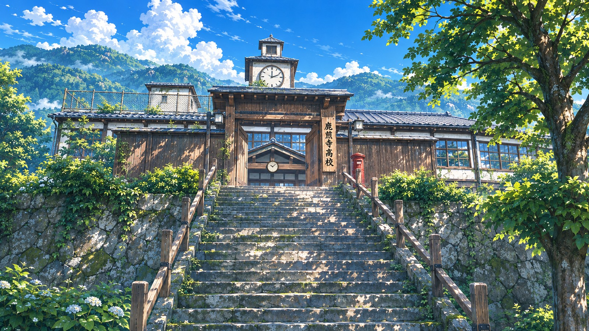
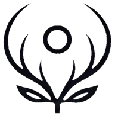
鹿煎寺高校
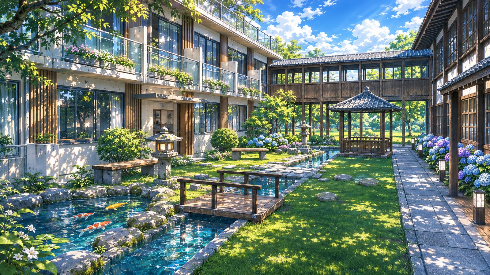
山の上で、
まなび、
くらす。
ようこそ、鹿煎寺高校へ。
緑の山の上、石段をのぼった先に、古い木造の校舎があります。窓を開ければ澄んだ風と鳥の声。校舎のすぐ裏には学生寮があり、生徒は中庭をはさんで、まなびと暮らしを行き来します。
時計塔のある校舎は、昔の姿をそのままに大切に使い続けています。
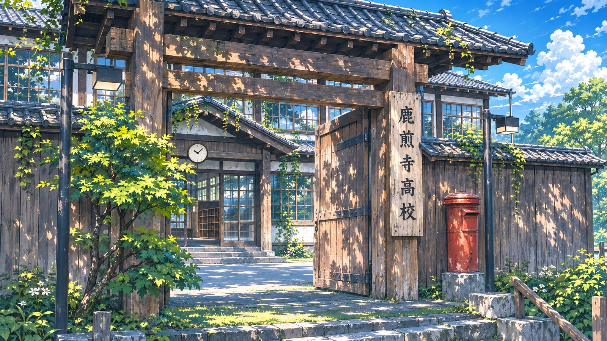
校舎を
めぐる。
01
04
石段をのぼり、瓦屋根の校門をくぐると、白い漆喰と黒い柱の校舎が迎えてくれます。木の床の廊下、格子の窓、時計塔。2階の教室からは山並みが見わたせます。
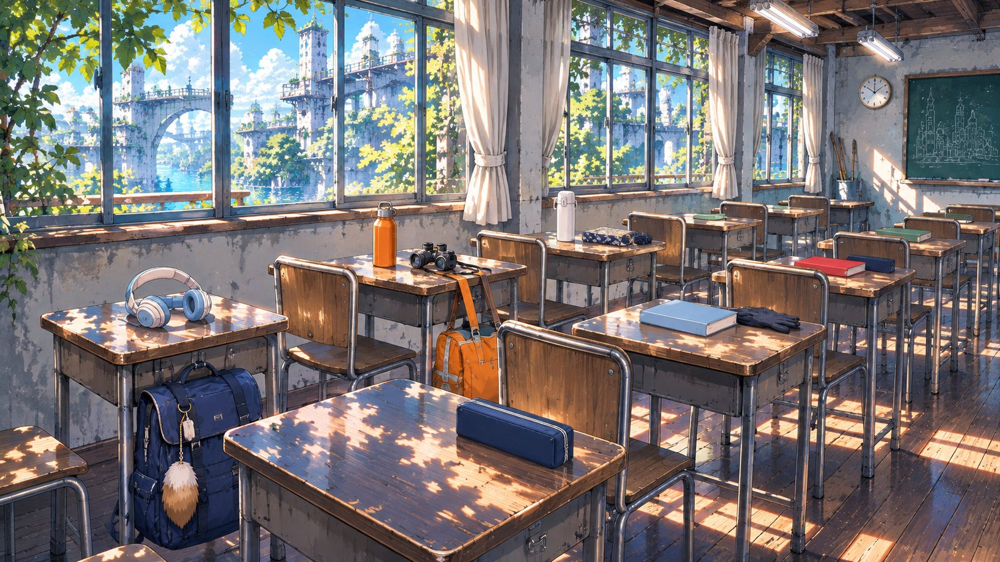
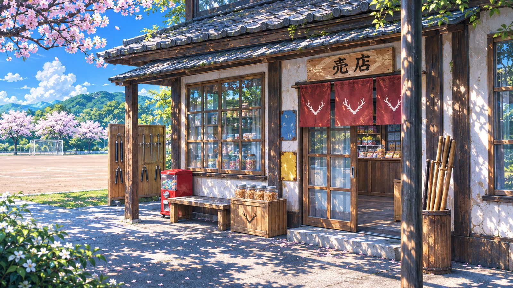
木造2階建ての校舎
1階に玄関・職員室・保健室・売店、2階に教室と配信部の部室があります。
屋上と時計塔
校舎の西半分は屋上。給水タンクのそばのベンチは昼休みの特等席です。
寮で、くらす。
校舎の北側、中庭をはさんで建つのが学生寮です。もとは新校舎として建てられた建物を、生徒たちが自分たちで寮に改造しました。木の美しさを生かした、明るくて新しい建物です。
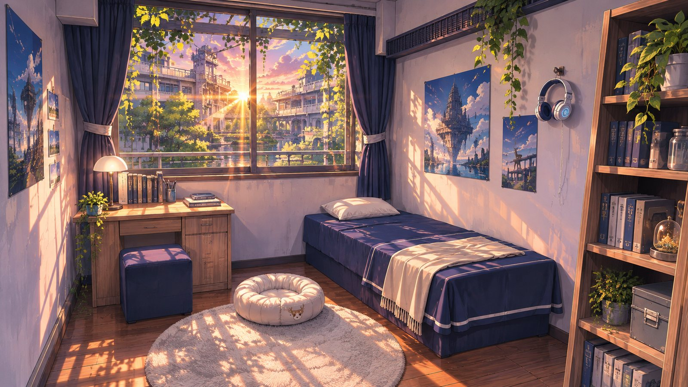
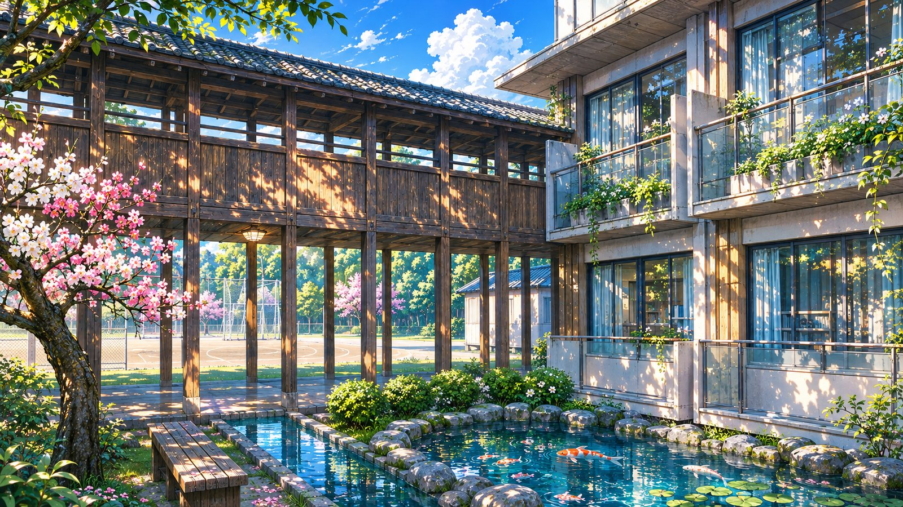
- 部屋
- 1K・全20室
- 共用
- 食堂・大浴場
- 屋上
- すりガラスの物干し場
- ベランダ
- 全室に小さなベランダ
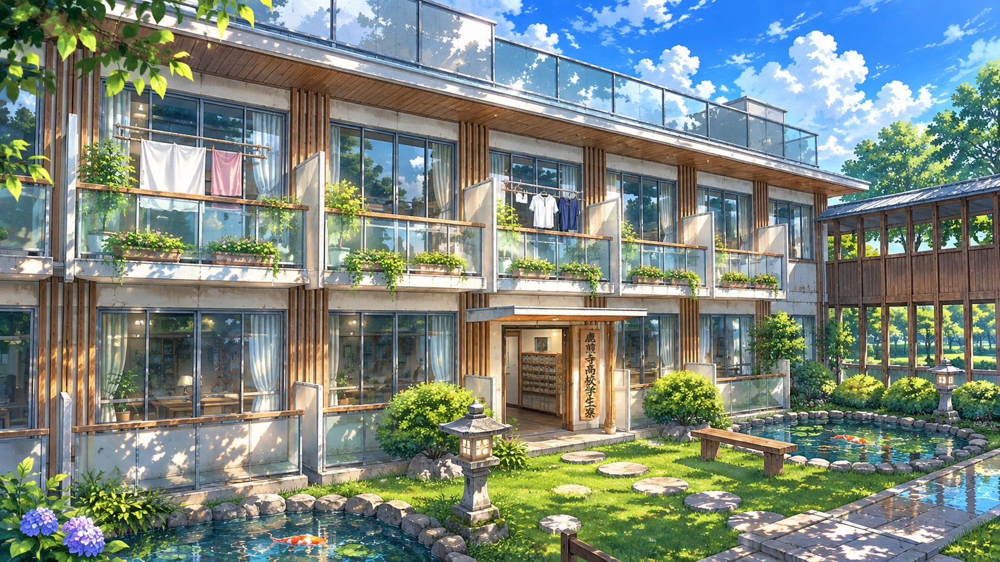
中庭を
はさんで。
02
07
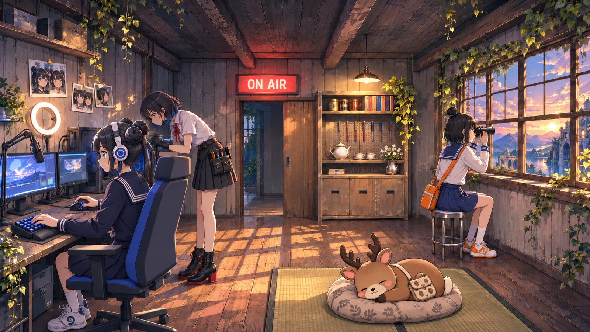
放課後は、
ON AIR。
03
08
校舎2階の東の端、もとは資料室だった部屋が配信部の部室です。入口の上の「ON AIR」が赤く光ったら、配信中のしるし。
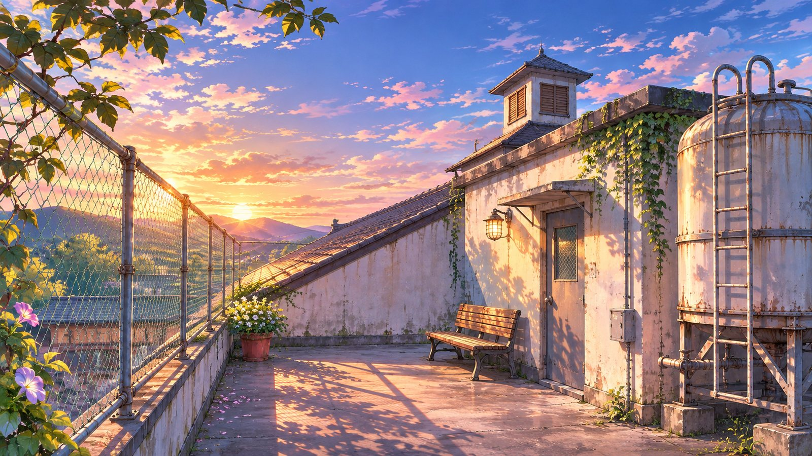
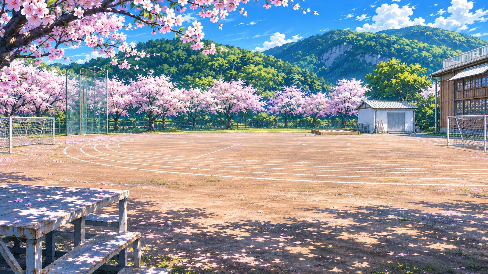
配信部
モニター2枚と手づくりの配信機材。部員は3人と1匹。
校庭
トラック、サッカーゴール、バックネット、鉄棒、砂場。
中庭の東屋
鯉の池のほとり。お弁当を食べる人が多い場所です。
在校生の声
あーすさん
部室の椅子に座ると、一日のはじまりって感じがします。
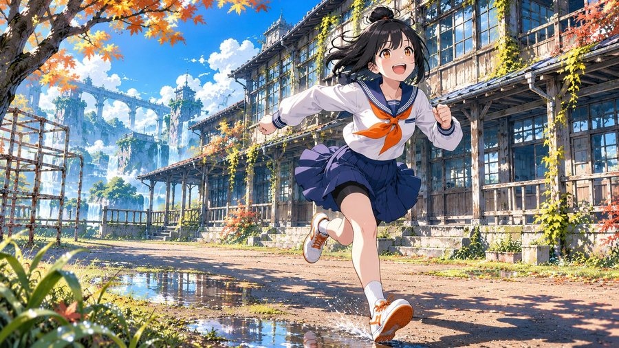
2年・配信部（見張り役）もみじ
窓ぎわから山を見るのが好き。屋上からの景色もおすすめ！
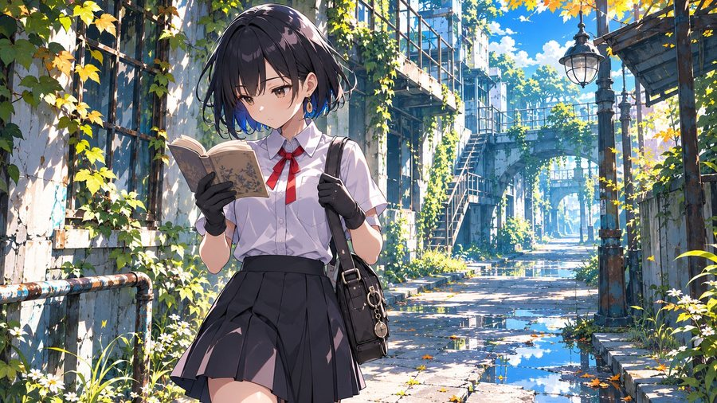
2年・配信部（機材担当）凛
放課後は部室で紅茶。ケーブルはいつもきれいに束ねてあります。
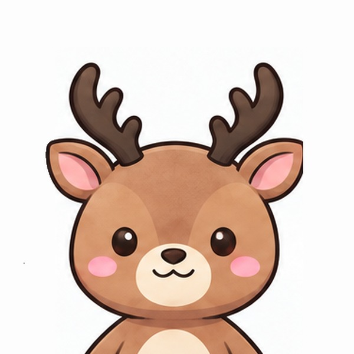
しかちゃん
教室でも部室でも寮でも、自分の丸いクッションで寝ています。どんぐりのポシェットが目印。
校内地図
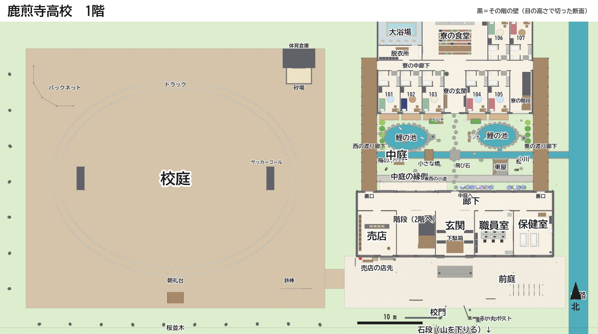
左から校庭、木造の校舎、中庭、学生寮。校舎と寮は東西の渡り廊下でつながっています。
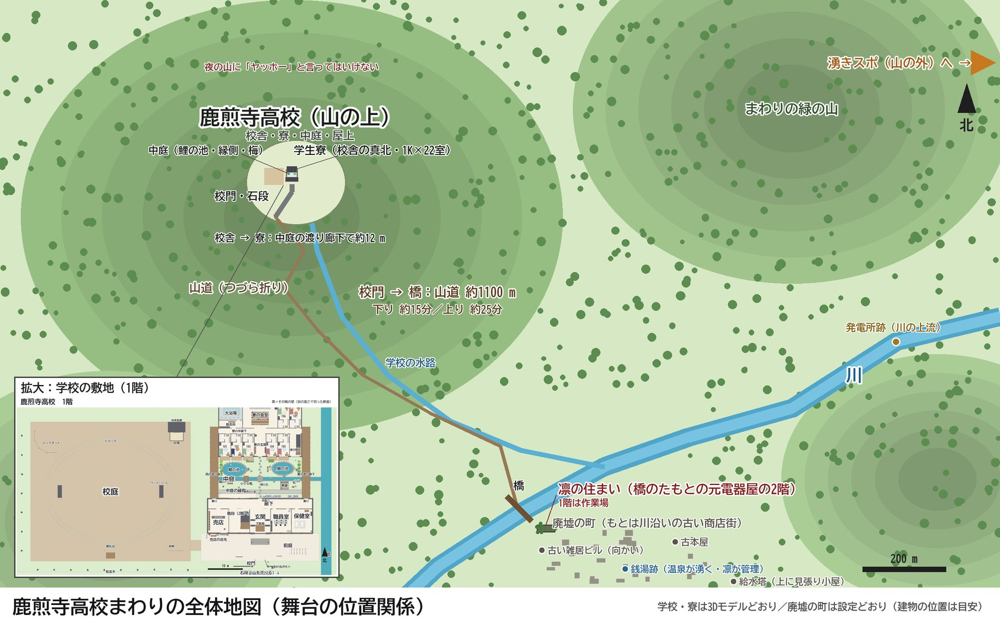
校門から石段と山道をくだると、麓の川の橋まで約1.1km（下り約15分）。
在校生の声・校内地図 11